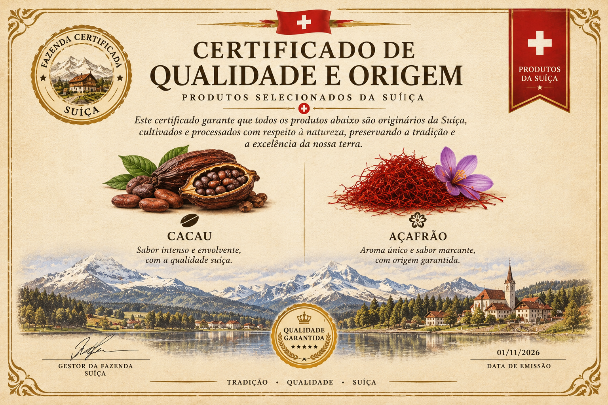
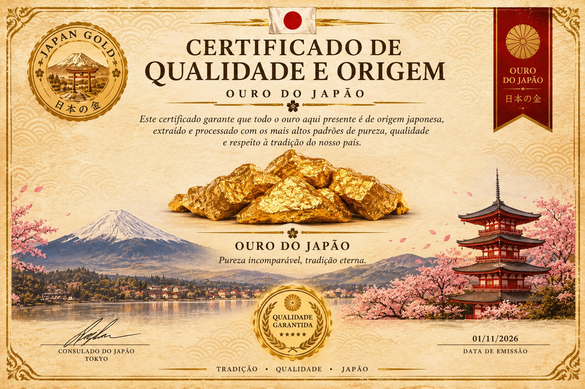

Todos os nossos ingredientes são de primeira categoria e vem importados de todos os cantos do mundo para melhor atender os alunos.
É da nossa fazenda nos montes holandeses que saem as carnes de mais alta qualidade, temos um vasto campo onde convivem cabras da raça Cheviot e bois da raça Wagyu, que produzem do melhor queijo e carne para nossa batata vulcânica
É de lá também que trazemos o presunto de bisão, uma raça diretamente da suiça que trouxemos pros campos holandeses para maior conforto
Aqui no Brasil possuímos uma grande plantação de produtos para abastecer nossa cantina, são diversos produtos de diversas localizações diferentes para que cada sabor seja excepcionalmente diferente no seu paladar
Nas terras tropicais de Madagascar encontramos ingredientes únicos, cultivados em um ambiente de clima quente e solo fértil, de lá trazemos a grande maioria das frutas e produtos selecionados para dar um toque especial aos nossos pratos
Nas vastas terras russas encontramos plantações de ingredientes resistentes ao clima frio, selecionamos cuidadosamente cada produto para garantir a qualidade e o sabor que nossos clientes merecem
Nas montanhas da Suíça encontramos condições perfeitas para a produção de ingredientes de alta qualidade, com pastagens naturais e um clima favorável, garantindo produtos selecionados para complementar nossas receitas

No Japão encontramos uma tradição de excelência e cuidado na extração e produção de ouro, valorizando a pureza e a qualidade em cada etapa, garantindo um produto selecionado que representa a riqueza e a sofisticação da cultura japonesa.
